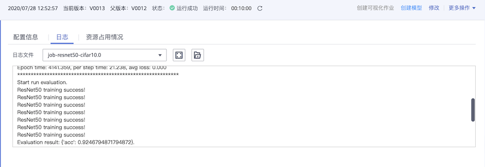

在云上使用MindSpore
Linux Ascend 全流程 初级 中级 高级

概述
ModelArts是华为云提供的面向开发者的一站式AI开发平台，集成了昇腾AI处理器资源池，用户可以在该平台下体验MindSpore。
本教程以ResNet-50为例，简要介绍如何在ModelArts使用MindSpore完成训练任务。
准备工作
ModelArts使用准备
参考ModelArts教程“准备工作”一栏，完成账号注册、ModelArts配置和创建桶的准备工作。
ModelArts教程链接：https://support.huaweicloud.com/wtsnew-modelarts/index.html。页面提供了较丰富的ModelArts教程，参考“准备工作”部分完成ModelArts准备工作。
拥有云上昇腾AI处理器资源
确保你的账号已拥有ModelArts华为云昇腾集群服务公测资格，可在这里提交申请。
数据准备
ModelArts使用对象存储服务（Object Storage Service，简称OBS）进行数据存储，因此，在开始训练任务之前，需要将数据上传至OBS。本示例使用CIFAR-10二进制格式数据集。
下载CIFAR-10数据集并解压。
CIFAR-10数据集下载页面：http://www.cs.toronto.edu/~kriz/cifar.html。页面提供3个数据集下载链接，本示例使用CIFAR-10 binary version。
新建一个自己的OBS桶（例如：ms-dataset），在桶中创建数据目录（例如：cifar-10），将CIFAR-10数据按照如下结构上传至数据目录。
└─对象存储/ms-dataset/cifar-10 ├─train │ data_batch_1.bin │ data_batch_2.bin │ data_batch_3.bin │ data_batch_4.bin │ data_batch_5.bin │ └─eval test_batch.bin
执行脚本准备
新建一个自己的OBS桶（例如：resnet50-train），在桶中创建代码目录（例如：resnet50_cifar10_train），并将以下目录中的所有脚本上传至代码目录：
https://gitee.com/mindspore/docs/tree/r1.0/tutorials/tutorial_code/sample_for_cloud/脚本使用ResNet-50网络在CIFAR-10数据集上进行训练，并在训练结束后验证精度。脚本可以在ModelArts采用
1*Ascend或8*Ascend两种不同规格进行训练任务。
为了方便后续创建训练作业，先创建训练输出目录和日志输出目录，本示例创建的目录结构如下：
└─对象存储/resnet50-train
├─resnet50_cifar10_train
│ dataset.py
│ resnet50_train.py
│
├─output
└─log
通过简单适配将MindSpore脚本运行在ModelArts
“执行脚本准备”章节提供的脚本可以直接运行在ModelArts，想要快速体验ResNet-50训练CIFAR-10可以跳过本章节。如果需要将自定义MindSpore脚本或更多MindSpore示例代码在ModelArts运行起来，需要参考本章节对MindSpore代码进行简单适配。
适配脚本参数
在ModelArts运行的脚本必须配置
data_url和train_url，分别对应数据存储路径(OBS路径)和训练输出路径(OBS路径)。import argparse parser = argparse.ArgumentParser(description='ResNet-50 train.') parser.add_argument('--data_url', required=True, default=None, help='Location of data.') parser.add_argument('--train_url', required=True, default=None, help='Location of training outputs.')
ModelArts界面支持向脚本中其他参数传值，在下一章节“创建训练作业”中将会详细介绍。
parser.add_argument('--epoch_size', type=int, default=90, help='Train epoch size.')
适配OBS数据
MindSpore暂时没有提供直接访问OBS数据的接口，需要通过MoXing提供的API与OBS交互。ModelArts训练脚本在容器中执行，通常选用/cache目录作为容器数据存储路径。
华为云MoXing提供了丰富的API供用户使用https://github.com/huaweicloud/ModelArts-Lab/tree/master/docs/moxing_api_doc，本示例中仅需要使用
copy_parallel接口。
将OBS中存储的数据下载至执行容器。
import moxing as mox mox.file.copy_parallel(src_url='s3://dataset_url/', dst_url='/cache/data_path')
将训练输出从容器中上传至OBS。
import moxing as mox mox.file.copy_parallel(src_url='/cache/output_path', dst_url='s3://output_url/')
适配8卡训练任务
如果需要将脚本运行在8*Ascend规格的环境上，需要对创建数据集的代码和本地数据路径进行适配，并配置分布式策略。通过获取DEVICE_ID和RANK_SIZE两个环境变量，用户可以构建适用于1*Ascend和8*Ascend两种不同规格的训练脚本。
本地路径适配。
import os device_num = int(os.getenv('RANK_SIZE')) device_id = int(os.getenv('DEVICE_ID')) # define local data path local_data_path = '/cache/data' if device_num > 1: # define distributed local data path local_data_path = os.path.join(local_data_path, str(device_id))
数据集适配。
import os import mindspore.dataset.engine as de device_id = int(os.getenv('DEVICE_ID')) device_num = int(os.getenv('RANK_SIZE')) if device_num == 1: # create train data for 1 Ascend situation ds = de.Cifar10Dataset(dataset_path, num_parallel_workers=8, shuffle=True) else: # create train data for 1 Ascend situation, split train data for 8 Ascend situation ds = de.Cifar10Dataset(dataset_path, num_parallel_workers=8, shuffle=True, num_shards=device_num, shard_id=device_id)
配置分布式策略。
import os from mindspore import context from mindspore.context import ParallelMode device_num = int(os.getenv('RANK_SIZE')) if device_num > 1: context.set_auto_parallel_context(device_num=device_num, parallel_mode=ParallelMode.DATA_PARALLEL, gradients_mean=True)
示例代码
结合以上三点对MindSpore脚本进行简单适配，以下述伪代码为例：
原始MindSpore脚本：
import os
import argparse
from mindspore import context
from mindspore.context import ParallelMode
import mindspore.dataset.engine as de
device_id = int(os.getenv('DEVICE_ID'))
device_num = int(os.getenv('RANK_SIZE'))
def create_dataset(dataset_path):
if device_num == 1:
ds = de.Cifar10Dataset(dataset_path, num_parallel_workers=8, shuffle=True)
else:
ds = de.Cifar10Dataset(dataset_path, num_parallel_workers=8, shuffle=True,
num_shards=device_num, shard_id=device_id)
return ds
def resnet50_train(args_opt):
if device_num > 1:
context.set_auto_parallel_context(device_num=device_num,
parallel_mode=ParallelMode.DATA_PARALLEL,
gradients_mean=True)
train_dataset = create_dataset(local_data_path)
if __name__ == '__main__':
parser = argparse.ArgumentParser(description='ResNet-50 train.')
parser.add_argument('--local_data_path', required=True, default=None, help='Location of data.')
parser.add_argument('--epoch_size', type=int, default=90, help='Train epoch size.')
args_opt, unknown = parser.parse_known_args()
resnet50_train(args_opt)
适配后的MindSpore脚本：
import os
import argparse
from mindspore import context
from mindspore.context import ParallelMode
import mindspore.dataset.engine as de
# adapt to cloud: used for downloading data
import moxing as mox
device_id = int(os.getenv('DEVICE_ID'))
device_num = int(os.getenv('RANK_SIZE'))
def create_dataset(dataset_path):
if device_num == 1:
ds = de.Cifar10Dataset(dataset_path, num_parallel_workers=8, shuffle=True)
else:
ds = de.Cifar10Dataset(dataset_path, num_parallel_workers=8, shuffle=True,
num_shards=device_num, shard_id=device_id)
return ds
def resnet50_train(args_opt):
# adapt to cloud: define local data path
local_data_path = '/cache/data'
if device_num > 1:
context.set_auto_parallel_context(device_num=device_num,
parallel_mode=ParallelMode.DATA_PARALLEL,
gradients_mean=True)
# adapt to cloud: define distributed local data path
local_data_path = os.path.join(local_data_path, str(device_id))
# adapt to cloud: download data from obs to local location
print('Download data.')
mox.file.copy_parallel(src_url=args_opt.data_url, dst_url=local_data_path)
train_dataset = create_dataset(local_data_path)
if __name__ == '__main__':
parser = argparse.ArgumentParser(description='ResNet-50 train.')
# adapt to cloud: get obs data path
parser.add_argument('--data_url', required=True, default=None, help='Location of data.')
# adapt to cloud: get obs output path
parser.add_argument('--train_url', required=True, default=None, help='Location of training outputs.')
parser.add_argument('--epoch_size', type=int, default=90, help='Train epoch size.')
args_opt, unknown = parser.parse_known_args()
resnet50_train(args_opt)
创建训练任务
准备好数据和执行脚本以后，需要创建训练任务将MindSpore脚本真正运行起来。首次使用ModelArts的用户可以根据本章节了解ModelArts创建训练作业的流程。
本章节以MindSpore 0.5.0-beta版本为例。ModelArts支持的MindSpore版本以创建训练作业时”算法来源”->”常用框架”->”AI引擎”可选择的版本为准。
进入ModelArts控制台
打开华为云ModelArts主页https://www.huaweicloud.com/product/modelarts.html，点击该页面的“进入控制台”。
使用常用框架创建训练作业
ModelArts教程https://support.huaweicloud.com/engineers-modelarts/modelarts_23_0238.html展示了如何使用常用框架创建训练作业。
使用MindSpore作为常用框架创建训练作业
以本教程使用的训练脚本和数据为例，详细列出在创建训练作业界面如何进行配置：
算法来源选择常用框架 > Ascend-Powered-Engine > MindSpore-0.5-python3.7-aarch64。代码目录选择预先在OBS桶中创建代码目录，启动文件选择代码目录下的启动脚本。数据来源选择数据存储位置，并填入OBS中CIFAR-10数据集的位置。运行参数：数据存储位置和训练输出位置分别对应运行参数data_url和train_url，选择增加运行参数可以向脚本中其他参数传值，如epoch_size。资源池选择公共资源池 > Ascend。资源池 > 规格选择Ascend: 1 * Ascend 910 CPU：24 核 96GiB或Ascend: 8 * Ascend 910 CPU：192 核 768GiB，分别表示单机单卡和单机8卡规格。
使用MindSpore作为常用框架创建训练作业，如下图所示。
查看运行结果
在训练作业界面可以查看运行日志
采用
8*Ascend规格执行ResNet-50训练任务，epoch总数为92，精度约为92%，每秒训练图片张数约12000，日志如下图所示。
采用
1*Ascend规格执行ResNet-50训练任务。epoch总数为92，精度约为95%，每秒训练图片张数约1800，日志如下图所示。如果创建训练作业时指定了日志路径，可以从OBS下载日志文件并查看。